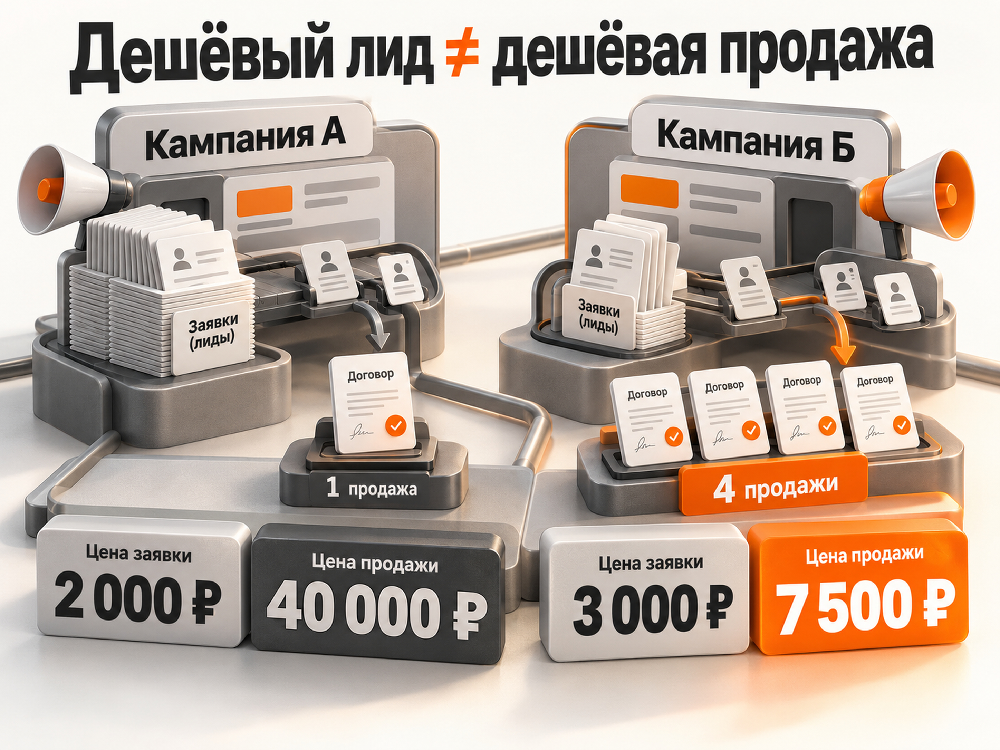

Блог о платном трафике
Сквозная аналитика Яндекс Директа: как связать рекламу с заявками и продажами
Сквозная аналитика Яндекс Директа позволяет определить, какие рекламные кампании приводят не просто заявки, а реальных покупателей. Для этого необходимо объединить расходы на рекламу, данные Яндекс Метрики, обращения клиентов и результаты продаж из CRM.
Для базовой сквозной аналитики необязательно покупать отдельный сервис. Можно использовать Яндекс Метрику, подключённую CRM и при необходимости коллтрекинг. Если нужны сложные отчёты по менеджерам, филиалам, товарам и маржинальности, возможностей Метрики может оказаться недостаточно.
Главное условие - правильно связать рекламный переход с обращением и последующей продажей. Без этой связи даже самый красивый отчёт не покажет реальную эффективность рекламы.
Как работает сквозная аналитика Яндекс Директа
Сквозная аналитика объединяет данные о рекламных расходах и действиях клиента после перехода на сайт. В отличие от обычного отчёта по конверсиям, она позволяет учитывать квалификацию заявок, заключённые сделки и полученную выручку.
В типичной системе происходит следующее:
- Пользователь переходит на сайт по объявлению Яндекс Директа. Метрика фиксирует визит и источник трафика.
- Посетитель оставляет заявку, звонит или связывается с компанией другим способом.
- Обращение поступает в CRM вместе с данными, позволяющими определить рекламный источник.
- Менеджер обрабатывает заявку, присваивает ей статус и фиксирует результат продажи.
- Информация о сделке объединяется с рекламными расходами в отчёте.
- При необходимости подтверждённые CRM-конверсии передаются обратно в Метрику для оптимизации Директа.
В результате можно узнать не только стоимость заявки, но и стоимость квалифицированного лида, продажи и фактическую выручку от рекламной кампании.
Если реклама приносит много дешёвых обращений, это ещё не означает, что она эффективна. Часть заявок может оказаться спамом, часть не соответствовать условиям компании, а часть не дойти до оплаты.
Какие данные нужны для сквозной аналитики
Для настройки сквозной аналитики необходимо сохранять не только UTM-метки, но и идентификаторы, позволяющие связать посетителя сайта с записью в CRM.
Минимальный набор данных:
| Данные | Для чего нужны |
|---|---|
| UTM-метки | Определение рекламного источника, кампании и объявления |
| ClientID Метрики | Связь посетителя сайта с обращением и заказом |
| Идентификатор заявки или сделки | Сопоставление обращений и предотвращение дублей |
| Дата обращения | Определение момента получения лида |
| Источник обращения | Разделение форм, звонков, мессенджеров и других каналов |
| Статус CRM | Определение качества заявки и результата обработки |
| Сумма продажи | Расчёт выручки и рекламной окупаемости |
| Расходы на рекламу | Расчёт CPL, стоимости продажи и других показателей |
Дополнительно можно сохранять товар или услугу, филиал, ответственного менеджера, себестоимость и маржинальность.
Необязательно собирать всё сразу. Состав данных должен зависеть от того, какие управленческие решения планируется принимать на основании отчёта.
UTM-метки и ClientID решают разные задачи
UTM-метки помогают определить рекламный источник. Например, `utm_source=yandex` обозначает источник трафика, а `utm_campaign` может содержать идентификатор рекламной кампании.
Но UTM-метка сама по себе не является надёжным идентификатором конкретного клиента.
ClientID - идентификатор посетителя, который создаёт Яндекс Метрика. Его можно получить с помощью метода `getClientID` и сохранить в CRM вместе с заявкой.
Когда из CRM поступят сведения о продаже, Метрика сможет использовать ClientID для поиска соответствующего визита. Дополнительно в предусмотренных форматах могут использоваться телефон, email или другие поддерживаемые идентификаторы.
Например, посетитель пришёл из рекламы, оставил заявку и через две недели оплатил услугу. Если ClientID сохранён и корректно передан вместе с данными заказа, Метрика может связать продажу с рекламным визитом.
Если CRM сохранила только номер телефона, точность и полнота такой привязки могут быть ниже.
Важно учитывать и ограничения браузера, пользовательского согласия, доступности идентификаторов и периода привязки. Получить точную историю каждого клиента не всегда возможно.
Для создания единообразной разметки можно использовать генератор UTM-меток.
Как настроить сквозную аналитику через Яндекс Метрику и CRM
Базовая настройка сквозной аналитики состоит из восьми этапов. Сначала необходимо обеспечить сбор обращений и идентификаторов, затем подключить передачу CRM-заказов и проверить отчёты.
Шаг 1. Настроить Яндекс Метрику
Установите счётчик Метрики на сайт и проверьте его работу на всех страницах, куда ведёт рекламный трафик.
Настройте цели на реальные действия пользователей: отправку формы, подтверждённое оформление заказа и другие важные события.
Не стоит считать полноценной заявкой простой клик по кнопке, если после него пользователь ещё должен выполнить действие во внешнем сервисе.
Шаг 2. Проверить связь Директа с Метрикой
Убедитесь, что в рекламных кампаниях указан правильный счётчик, а переходы из объявлений распознаются в отчётах Метрики.
Проверьте UTM-разметку, особенно если данные используются в сторонних системах аналитики и CRM.
Расходы Яндекс Директа могут поступать в соответствующие отчёты Метрики автоматически. Не нужно повторно импортировать те же расходы как отдельный рекламный источник: это может привести к задвоению затрат.
Шаг 3. Передавать ClientID в CRM
При отправке формы сайт должен получать ClientID через Метрику и передавать его вместе с остальными полями заявки.
На практике для этого можно использовать скрытое поле формы и обработчик, сохраняющий идентификатор в карточке CRM.
Важно проверить не только основную форму сайта, но и формы обратного звонка, квизы, всплывающие окна и другие точки получения заявок.
Если идентификатор не был получен, лучше сохранить заявку без него, чем подставлять случайное значение.
Шаг 4. Подключить звонки и остальные обращения
Если клиенты звонят, потребуется решение, позволяющее связывать звонок с рекламным источником. Обычно для этого используют динамический коллтрекинг.
Обращения из мессенджеров, почты и других каналов также необходимо учитывать отдельно.
Шаг 5. Настроить статусы заявок в CRM
Для начала достаточно нескольких понятных состояний:
- Новая заявка.
- Нецелевое обращение или спам.
- Квалифицированный лид.
- Сделка в работе.
- Успешная продажа.
- Отказ или отмена.
Статусы должны отражать реальные этапы обработки. Если менеджеры не заполняют их или используют по-разному, отчёт о качестве лидов быстро теряет смысл.
Полезно заранее установить критерии квалификации, чтобы каждый менеджер одинаково понимал, какое обращение считается целевым.
Подробнее об этом в статье «Квалификация лидов в продажах».
Шаг 6. Подключить загрузку данных из CRM
Яндекс Метрика позволяет импортировать информацию о клиентах и заказах, включая идентификаторы, статусы, выручку и себестоимость.
Способ подключения зависит от CRM. Можно использовать поддерживаемую интеграцию, API или соответствующий механизм импорта данных.
Для Битрикс24 предусмотрена отдельная интеграция Метрики. При собственной CRM может потребоваться разработка передачи заказов.
Необходимо сопоставить статусы вашей CRM со статусами, используемыми Метрикой, и обеспечить корректную передачу изменений.
Шаг 7. Открыть отчёты сквозной аналитики
После передачи и успешной привязки данных можно использовать отчёты Яндекс Метрики:
- «Источники заказов из CRM» для анализа заказов, продаж и выручки по источникам.
- «Источники, расходы и ROI» для сопоставления рекламных затрат и финансовых результатов.
- «Офлайн-конверсии» для проверки загруженных конверсий и их привязки к визитам.
Не все переданные заказы обязательно попадут в рекламные отчёты. Для корректного анализа важно, чтобы система смогла связать заказ с подходящим визитом.
Шаг 8. Проверить настройку на тестовой продаже
Сделайте контролируемую заявку с рекламно размеченного перехода или в тестовой среде, проверьте создание записи в CRM, её ClientID и передачу статуса.
Затем проверьте, появился ли соответствующий результат в Метрике.
Контрольную проверку лучше провести для каждого основного способа обращения. После этого сравните количество обращений в CRM с количеством успешно учтённых обращений в аналитике.
Не требуйте абсолютного совпадения двух систем, но каждое существенное расхождение должно иметь объяснение.
Как учитывать звонки, мессенджеры и электронную почту
Сквозная аналитика должна охватывать реальные обращения клиентов, а не только формы сайта.
Звонки. Динамический коллтрекинг подменяет номер на сайте и позволяет связать звонок с визитом или источником рекламы. Далее сведения о звонке и его результате передаются в CRM. Подробнее: коллтрекинг для Яндекс Директа.
Электронная почта. Email-трекинг может использовать подменные адреса для определения источника писем. Без такой системы прямое письмо нередко невозможно надёжно связать с конкретным рекламным переходом.
Мессенджеры. Здесь особенно важно различать нажатие кнопки и фактически отправленное сообщение.
Например, посетитель нажал на кнопку Telegram, но не написал компании. Цель Метрики на клик может быть достигнута, хотя реального обращения нет.
Чтобы учитывать сообщения в WhatsApp, Telegram или MAX, необходим механизм регистрации входящего обращения: подходящая бизнес-интеграция, бот, CRM-коннектор либо специализированный сервис с доступом к нужным событиям.
Возможности отслеживания зависят от самого мессенджера, типа аккаунта и доступных интеграций. Обычная ссылка на личный аккаунт не обеспечивает автоматическую регистрацию факта переписки в Метрике.
Практический вывод: в отчёте следует отдельно учитывать переходы в мессенджер и подтверждённые обращения из него. Для оптимизации рекламы полезнее второй показатель, если его удаётся достоверно передавать.
Пример сквозной аналитики: дешёвые заявки против реальных продаж
Рассмотрим условный пример двух кампаний Яндекс Директа за один и тот же период.
| Показатель | Кампания А | Кампания Б |
|---|---|---|
| Расходы | 40 000 ₽ | 30 000 ₽ |
| Заявки | 20 | 10 |
| Стоимость заявки | 2 000 ₽ | 3 000 ₽ |
| Продажи | 1 | 4 |
| Конверсия заявки в продажу | 5% | 40% |
| Стоимость продажи | 40 000 ₽ | 7 500 ₽ |
Если смотреть только стоимость заявки, кампания А кажется выгоднее: её CPL составляет 2 000 ₽ против 3 000 ₽.
Но после сопоставления с CRM картина меняется.
Кампания А принесла одну продажу за 40 000 ₽ рекламных расходов. Кампания Б принесла четыре продажи по 7 500 ₽ каждая.
Стоимость продажи у кампании Б примерно в 5,3 раза ниже, несмотря на более дорогие заявки.
Это условный расчёт, а не результаты реального рекламного проекта. Он показывает, почему оценка только по CPL может приводить к неправильному распределению бюджета.

При этом даже стоимость продажи не даёт окончательного ответа об окупаемости. Для этого необходимо учитывать выручку и экономику каждой сделки.
Какие показатели считать в сквозной аналитике
Набор показателей зависит от задачи бизнеса. Не стоит перегружать отчёт метриками, по которым никто не принимает решения.
| Показатель | Формула | Что показывает |
|---|---|---|
| CPL | Расходы / все лиды | Стоимость обращения |
| Стоимость квалифицированного лида | Расходы / качественные лиды | Стоимость обращения, соответствующего критериям |
| CPS / стоимость продажи | Расходы / продажи | Расходы на получение одной продажи |
| Конверсия в продажу | Продажи / лиды × 100% | Доля обращений, завершившихся продажей |
| ROAS | Выручка / рекламные расходы × 100% | Соотношение выручки и расходов на рекламу |
| ДРР | Рекламные расходы / выручка × 100% | Доля рекламы в выручке |
Например, при рекламных расходах 50 000 ₽ и выручке 250 000 ₽ показатель ROAS составит 500%, а ДРР - 20%.
Это не означает, что компания получила 200 000 ₽ чистой прибыли. Нужно учесть себестоимость, оплату труда, налоги и другие затраты.
Отдельно следует понимать, что показатель «Прибыль» по CRM-заказам в Метрике рассчитывается на основе выручки и переданной себестоимости. Его нельзя автоматически приравнивать к чистой прибыли бизнеса.
При сравнении расходов также необходимо привести данные к единому принципу учёта НДС, комиссий и других затрат. По умолчанию расходы Яндекс Директа в соответствующих отчётах Метрики отображаются без НДС.
Подробнее о стоимости привлечения клиента и ROAS в маркетинге.
Что выбрать: Яндекс Метрику, готовый сервис или собственную аналитику
Для сквозной аналитики Яндекс Директа подходят три основных решения. Выбор зависит не столько от количества рекламных кампаний, сколько от каналов обращений и сложности управленческого отчёта.
| Решение | Когда подходит | Главное ограничение |
|---|---|---|
| Яндекс Метрика + CRM | Нужно связать рекламные расходы с заявками, заказами, продажами и выручкой | Ограниченная гибкость сложных управленческих разрезов |
| Roistat, Calltouch и другие сервисы | Много каналов, звонков, интеграций и нужен готовый интерфейс | Платная инфраструктура и зависимость от возможностей платформы |
| Собственная аналитика и BI | Нужны индивидуальные отчёты по филиалам, менеджерам, продуктам и финансовым показателям | Требуются разработка, поддержка и контроль качества данных |
Яндекс Метрика и CRM
Для бизнеса, который в основном получает заявки через сайт и использует Яндекс Директ, разумно начать с возможностей Метрики.
При корректной интеграции можно анализировать заказы и их статусы, а также использовать подтверждённые конверсии для рекламных стратегий.
При этом в отчёте будут учитываться ограничения атрибуции и доля заказов, которую удалось связать с визитами.
Готовые сервисы сквозной аналитики
Roistat, Calltouch и другие платформы позволяют объединять источники рекламы, обращения и сделки в собственной системе отчётности.
Их преимущество заключается в готовых интеграциях, инструментах учёта звонков и интерфейсах анализа воронки продаж.
Но подключение платного сервиса само по себе не гарантирует точности данных. Если в CRM отсутствуют идентификаторы, не записываются обращения или некорректно ведутся статусы, проблема сохранится.
Стоимость внедрения зависит от состава услуг, объёма трафика, телефонии и числа интеграций. Универсальной цены настройки для всех компаний нет.
Собственная сквозная аналитика
Если готовых отчётов недостаточно, данные из Яндекс Директа, Метрики, коллтрекинга и CRM можно объединять через API в отдельной базе данных.
Для визуализации подходят BI-платформы, включая DataLens, или собственный веб-интерфейс.
Такой подход позволяет учитывать структуру конкретного бизнеса: филиалы, менеджеров, услуги, разные источники продаж и индивидуальную финансовую модель.
Но разработка собственного отчёта не отменяет необходимости корректно собирать исходные данные.
Выбирать нужно не самый функциональный сервис, а решение, которое отвечает на реальные вопросы бизнеса при разумных затратах на поддержку.
Как вернуть данные CRM в Яндекс Директ для оптимизации рекламы
Данные о качестве заявок можно использовать не только для управленческих отчётов, но и для обучения рекламных стратегий Яндекс Директа.
Представим условную ситуацию: реклама принесла 100 заявок.
После обработки в CRM выяснилось:
- 40 обращений оказались спамом.
- 35 заявок не соответствовали условиям компании.
- 20 заявок прошли квалификацию, но ещё не завершились оплатой.
- 5 заявок закончились продажами.
Если стратегия получает только цель на отправку формы, она ориентируется на все 100 заявок, включая спам и нецелевые обращения.
При передаче подтверждённых CRM-конверсий становится возможной оптимизация на более ценные действия: квалифицированный лид, заключённый договор или оплату.
Для этого нужно передавать события и статусы в Метрику, убедиться, что они привязываются к визитам, и использовать соответствующие цели в стратегии Яндекс Директа.
Однако не следует автоматически выбирать самую глубокую цель. Если продажи происходят редко и между заявкой и оплатой проходит много времени, алгоритму может не хватать конверсий для стабильного обучения.
В таких случаях разумнее использовать более частое, но качественное событие, например подтверждённую квалификацию обращения.
Подробнее: офлайн-конверсии в Яндекс Директе и работа стратегий Яндекс Директа.
Почему сквозная аналитика показывает неправильные данные
Основные причины расхождений связаны с потерей идентификаторов, неполной передачей обращений, ошибками CRM и различиями в методах подсчёта.
| Проблема | Что проверить |
|---|---|
| В CRM есть заявки, но нет источника | UTM-метки, редиректы, сохранение данных форм |
| ClientID отсутствует | Работу счётчика, получение идентификатора и передачу скрытого поля |
| Звонков больше, чем в отчёте | Коллтрекинг, подмену номеров, интеграцию с CRM |
| Сообщения не учитываются | Регистрируется ли факт переписки, а не только нажатие кнопки |
| Продажи есть в CRM, но нет в Метрике | Формат импорта, идентификаторы, статусы и привязку к визитам |
| Сделки задваиваются | Уникальные идентификаторы заказов и правила объединения дублей |
| Расходы не совпадают | Период, НДС, валюту, права доступа и повторную загрузку |
| Продажи различаются по источникам | Модель атрибуции и момент отнесения конверсии |
Особое внимание стоит уделять отчёту «Офлайн-конверсии». Он позволяет проверить, удалось ли привязать переданные события к визитам, и изучить причины отсутствия привязки.
Почему Метрика и CRM могут показывать разное количество продаж
CRM обычно считает все зарегистрированные сделки. Отчёт Метрики по рекламным источникам может учитывать только те заказы, которые удалось связать с визитами.
Дополнительно влияют даты создания и оплаты заказа, выбранный период, модель атрибуции и корректность передачи данных.
Поэтому полезно контролировать два показателя отдельно:
- Общее число заявок и продаж по данным CRM.
- Число заявок и продаж, успешно связанных с рекламным источником.
Если CRM зарегистрировала 100 обращений, а у 36 из них невозможно определить источник, доля обращений с установленным источником составляет 64%.
Это сигнал проверить полноту сбора данных. Но само по себе расхождение ещё не доказывает техническую ошибку: часть обращений могла прийти напрямую, вне отслеживаемых каналов.
Почему данные могут перестать поступать после успешной настройки
Интеграции способны ломаться при изменении форм сайта, структуры CRM, настроек телефонии или прав доступа.
Поэтому полезно регулярно проверять наличие новых данных, долю привязанных обращений и количество ошибок импорта.
При заметном расхождении сначала нужно проверить корректность аналитики и только потом делать вывод, что рекламные кампании стали работать хуже.
Нужна ли сквозная аналитика небольшому бизнесу
Сквозная аналитика полезна небольшому бизнесу, когда решения о рекламном бюджете зависят от реальных продаж, а не только от количества обращений.
Но полноценная BI-система и дорогие интеграции нужны далеко не всегда.
Если у компании одна рекламная система, небольшой объём заявок и простая воронка, для начала достаточно:
- Яндекс Метрики с корректными целями.
- CRM с источниками и статусами заявок.
- Передачи данных о квалификации и продажах.
- Учёта основных звонков и других обращений, если они существенны.
- Регулярной сверки рекламных расходов и результатов CRM.
Если сотрудники не фиксируют продажи, внедрение сложной аналитики лучше начать с наведения порядка в самой CRM.
С чего начинать внедрение сквозной аналитики
Я бы рекомендовал сначала определить, какой результат рекламы необходимо измерять.
Для одного бизнеса это квалифицированный лид, для другого - оплаченный заказ, для третьего - продажа с определённой маржинальностью.
После выбора главного показателя нужно проверить путь данных от рекламного перехода до CRM и убедиться, что обращения действительно можно связать с источниками.
Затем следует подключить передачу статусов и продаж, собрать минимальный отчёт и проверить его на реальных обращениях.
Только после этого имеет смысл усложнять систему: добавлять собственные управленческие показатели, разрезы по менеджерам, дополнительную финансовую информацию и BI.
Главный результат сквозной аналитики - не наличие красивого дашборда, а возможность понять, какая реклама приводит качественных клиентов, сколько стоят продажи и какие кампании действительно выгодны бизнесу.
Я занимаюсь Яндекс Директом более 10 лет и при оценке рекламных кампаний уделяю внимание не только стоимости обращения, но и его качеству, результатам продаж и корректности аналитики.
Посмотреть примеры работы с рекламными проектами можно в разделе кейсов.